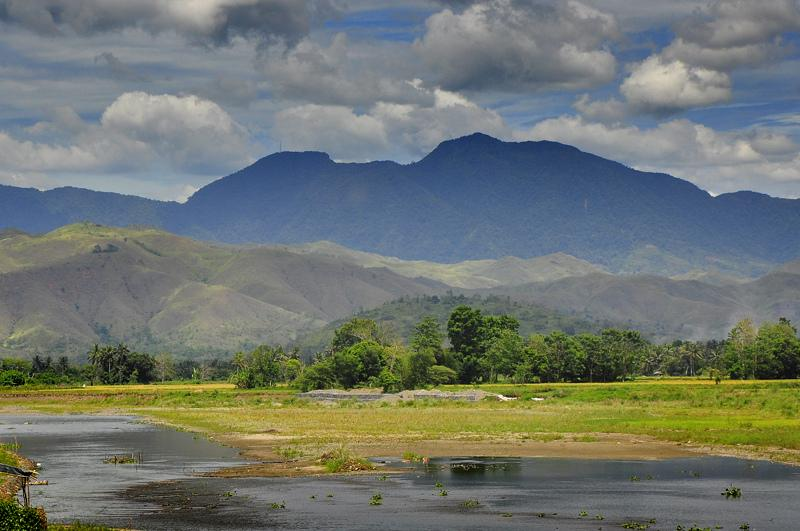
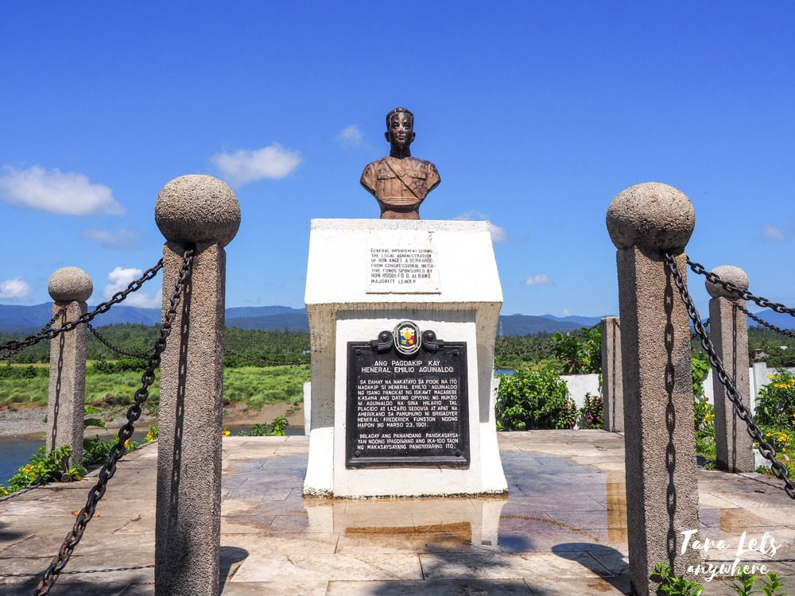

Adventure, culture, and natural wonders await—discover the sights that make Isabela unforgettable.

Discover waterfalls, rivers, beaches, and outdoor adventures across Isabela—from Bonsai Forest in Dinapigue and Dibulo Falls, to Dicotcotan Beach in Palanan. Explore Fuyot Springs National Park, experience Abuan River, or unwind at places like Malasi Lake. Whether you're trekking, swimming, or just enjoying the view, there’s always something to explore.

Step back in time and explore Isabela’s rich history through its heritage sites. Visit the spiritual Shrine of Our Lady of the Visitation of Guibang in Gamu, uncover local stories at the Isabela Museum and Library, and reflect on Filipino patriotism at the Aguinaldo Shrine in Palanan. Admire heroism at the Landmark of Heroes in Jones, step into history at the Ilagan Japanese Tunnel, and enjoy a leisurely cultural stop at Queen Isabela Park in Ilagan City. From religious landmarks to historical monuments, Isabela offers a diverse journey through its past for all visitors.
From natural wonders to hidden gems, Isabela’s attractions are waiting to be explored.